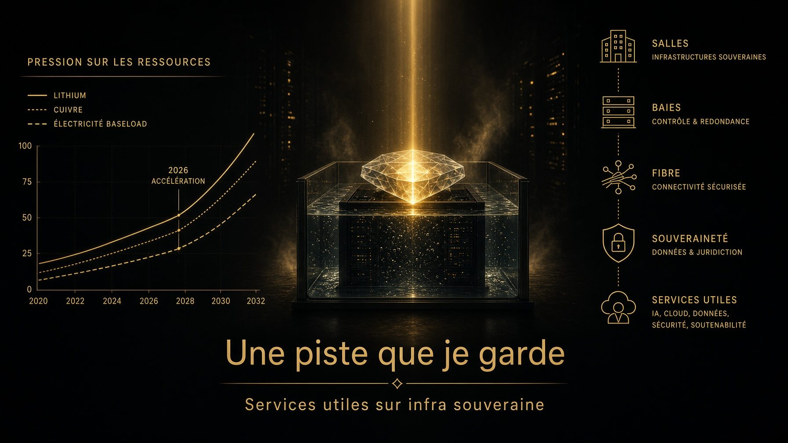

Note · Novembre 2026
Observation sur les graphiques de pression environnementale

Les tendances sous-jacentes sont réelles et bien documentées par l’IEA et d’autres acteurs. L’IA et les véhicules électriques exercent une pression croissante sur l’électricité, le cuivre, le lithium et l’eau.
En revanche, les graphiques présentés utilisent un indice synthétique de « pression environnementale cumulée » (base 100 = IA 2024) et des seuils de rupture (locale vers 500, systémique vers 1000) qui ne sont pas calibrés sur des modèles officiels. Ce sont des constructions narratives destinées à illustrer le risque, et non des projections quantifiées.
Ce que disent les données réelles
Électricité (IEA)
- 2024/2025 : environ 415–485 TWh pour les data centers.
- 2030 : environ 945–1000 TWh (à peu près un doublement, ~3 % de l’électricité mondiale).
- 2035 : autour de 1300 TWh dans le scénario de base.
L’IA est le principal driver de la croissance. Ce n’est pas une rupture du système énergétique global, mais les tensions régionales sont déjà visibles (réseaux, transformateurs, notamment aux États-Unis).
Minéraux critiques
- Lithium : croissance très forte (x3 à x5 d’ici 2040), surtout tirée par les batteries de véhicules électriques.
- Cuivre : plus gros volume additionnel. L’IEA et d’autres signalent des écarts d’offre possibles vers 2035 (ordre de grandeur 25–30 % dans certains scénarios).
- Global X (novembre 2026) : d’ici 2035, la demande minée de cuivre, lithium et terres rares pourrait dépasser l’offre de 17–22 %. Un data center AI d’1 GW nécessite environ 180 000 tonnes de matériaux, dont ~27 000 tonnes de cuivre.
Les délais de développement de nouvelles mines (10–18 ans) rendent les bottlenecks réels.
Eau
La consommation directe des data centers peut doubler ou tripler d’ici 2030 selon les technologies de refroidissement. Le stress est surtout local (zones arides). Le refroidissement par immersion (exactement ce que montrait TotaLinuX) réduit fortement cette pression.
Ce qui pose problème dans les graphiques
- L’indice cumulé et les seuils de rupture (locale ~2032, systémique ~2035–2036) ne sont pas documentés dans les rapports IEA ou équivalents.
- La courbe « IA + VE » qui accélère plus vite que « IA seule » est directionnellement juste (concurrence sur le cuivre et les réseaux), mais les valeurs exactes et l’accélération post-2026 (145) sont opaques.
- On ne peut pas « calculer pareil » : trop d’hypothèses non explicitées (pondération entre énergie, eau, lithium, cuivre, terres rares, définition précise des seuils).
En résumé : les graphiques illustrent un risque réel et documenté de tensions croissantes sur les ressources d’ici le milieu des années 2030. Ils ne sont pas « faux », mais ils ne sont pas non plus des prévisions calibrées. C’est du scénario illustratif, pas du calcul de référence.